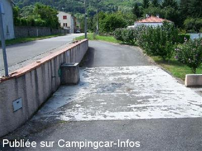
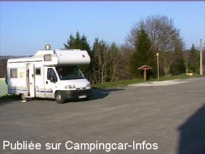

ASN = Aire de services avec stationnement nuit possible de :
SERRES SUR ARGET
(N° 119)
Accès/adresse :
Accès D45
09000 SERRES SUR ARGET
09000 SERRES SUR ARGET
Latitude : (Nord) 42.9699° Décimaux ou 42° 58′ 11′′
Longitude : (Est) 1.51972° Décimaux ou 1° 31′ 10′′
Tarif : 2014
Stationnement, services : 5 €
A déposer dans une enveloppe à la mairie
Services :


Autres informations :
Ouvert toute l'année
Derrière le cimetière, au dessus de la salle polyvalente.
Tél Mairie : + 33(0)561 651 621

Le 11/08/2008 par sicard.michel025

Le 30/03/2003 par jean-pierre
de
Pierre Deschamps
le 05/01/2016 :
De passage en caravane (autonome) début Décembre 2015,
Aire calme, vaste et plane; un CC Britanique à côté.
Village agréable avec une belle vue. Alzen le village d'à côté est à voir (écomusée). Belle randos de moyenne montagne....
Cordialement,
Pierre
De passage en caravane (autonome) début Décembre 2015,
Aire calme, vaste et plane; un CC Britanique à côté.
Village agréable avec une belle vue. Alzen le village d'à côté est à voir (écomusée). Belle randos de moyenne montagne....
Cordialement,
Pierre
de
la normandie
le 06/12/2014 :
nous n avons pas compris le panneau interdisent le stationnement des camping cars la nuit (réglement de la part du maire)alors que les gens du villages nous on dit pas de soucis?? sinon bien dormi a éviter je pense le samedi soir a côter de la salle des fêtes
nous n avons pas compris le panneau interdisent le stationnement des camping cars la nuit (réglement de la part du maire)alors que les gens du villages nous on dit pas de soucis?? sinon bien dormi a éviter je pense le samedi soir a côter de la salle des fêtes
de
Roland 61
le 27/07/2014 :
Parking près de la salle polyvalente (à éviter le samedi soir si occupation de la salle). Accès difficile aux services qui sont à l'extérieur en haut du petit bourg
Parking près de la salle polyvalente (à éviter le samedi soir si occupation de la salle). Accès difficile aux services qui sont à l'extérieur en haut du petit bourg
de
jym17
le 18/03/2014 :
Nombreuses randonnées pédestres, à signaler le marché du samedi matin, très typique par sa diversité international
aire très calme en semaine
Nombreuses randonnées pédestres, à signaler le marché du samedi matin, très typique par sa diversité international
aire très calme en semaine
de
Joëlle
le 23/08/2011 :
de passage le 03/08/2011
Aire tranquille dans petit village sympa. Nous étions 5 CC.
pas de commerce à proximité.
et attention route étroite et sinueuse.
Merci à la municipalité pour cette aire de CC.
de passage le 03/08/2011
Aire tranquille dans petit village sympa. Nous étions 5 CC.
pas de commerce à proximité.
et attention route étroite et sinueuse.
Merci à la municipalité pour cette aire de CC.
de
BLONDEL
le 06/12/2010 :
Une nuit début décembre, calme comme tout, juste les chasseurs qui se réunissaient vers 7 heures 30 dans leur salle au fond du terrain. Beau paysage.
Une nuit début décembre, calme comme tout, juste les chasseurs qui se réunissaient vers 7 heures 30 dans leur salle au fond du terrain. Beau paysage.
de
pierre 62
le 13/07/2010 :
De passage en mai, endroit reposant, devrait être copié par des centaines de municipalités.
De passage en mai, endroit reposant, devrait être copié par des centaines de municipalités.
de
viaene rudy
le 15/06/2009 :
Bonjour. Endroit très calme, nous étions deux à passer la nuit. Merci à la commune. §
Bonjour. Endroit très calme, nous étions deux à passer la nuit. Merci à la commune. §
de
MarWil
le 24/09/2008 :
4€ à déposer dans la boîte aux lettres de la mairie si utilisation de la borne, nuit calme au son des cloches. Merci à la mairie.
4€ à déposer dans la boîte aux lettres de la mairie si utilisation de la borne, nuit calme au son des cloches. Merci à la mairie.
de
gégé32
le 08/08/2008 :
Pour 4€ ,tranquillité assurée même début août, à 10 kms de Foix par la D17. A visiter, les forges de Pyrène à Montgaillard près de Foix.
Pour 4€ ,tranquillité assurée même début août, à 10 kms de Foix par la D17. A visiter, les forges de Pyrène à Montgaillard près de Foix.
de
Nicole
le 27/05/2008 :
C'est une aire toute simple et parfaite d'utilisation. Il y a le grand parking de la salle polyvalente en-dessous pour une nuit calme et des balades dans le coin. Pas de commerçants dans le village, dommage, on pourrait remercier la commune.
C'est une aire toute simple et parfaite d'utilisation. Il y a le grand parking de la salle polyvalente en-dessous pour une nuit calme et des balades dans le coin. Pas de commerçants dans le village, dommage, on pourrait remercier la commune.
de
Jean Paul
le 11/11/2006 :
Passé une nuit en octobre. Nous étions bien seuls sur cet immense parking derrière la salle polyvalente. Aucun problème par ailleurs mais ce n'est pas vraiment "la place du village".
Passé une nuit en octobre. Nous étions bien seuls sur cet immense parking derrière la salle polyvalente. Aucun problème par ailleurs mais ce n'est pas vraiment "la place du village".